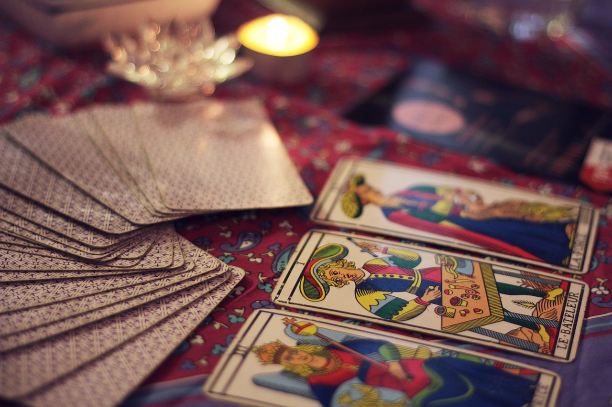

タロットカード占い
タロットカード占いをダウンロードタロット占いとは？
タロット占いは、タロット（タローカード）を用いた占いの一種。
78枚のタロットカードをシャッフルし、出たカードから結果を導き出すタロット占う。
起源は13世紀(日本は室町時代)で、歴史ある占い。
タロットカード占い(このソフト)とは？
タロットカード占いをするソフト。
仕組みは？
数をランダムに生成して、その数に対応する説明(占い)を表示する。
詳細
言語 : Python3
使用ライブラリ : random
Source Code
#coding: UTF-8
import random
#逆位置(カードの向きが反対になる事)は考えないものとします。(決して面倒だからではないですよ！
#全部、正位置の説明です
def tarot():
tarot = ['愚者','魔術師','女教皇','女帝','皇帝','教皇','恋人','戦車','力','陰者','運命の輪','正義','吊るされた男','死神','節制','悪魔','塔','星','月','太陽','審判','世界',]
manual = ['放浪者のように欲求に忠実に行動し、未知の世界にも飛び込む無謀さと勇敢さを持つことを示します。新しい可能性や変化を求め、人の心に柔軟性をもたらしそれによって直感を鋭くさせていく。そして、何かを始めることに対して積極的な気持ちを与え不安や迷いを感じさせないようにします。更に、そこから生まれる行動は人の才能を開花させるものとなるでしょう。',
'人に頼らず自分を信じて単独で動いたり、何かを始めたりすることで、よい結果を引き寄せます。全ての物事の始まりや状況や無限の可能性も表し、出会いを表すカードでもあります。',
'知性の高さや冷静さが、プラスに働くことを示します。集中的に勉強に取り組み知力を高め、混純とした状況でも冷静に観察します。また、人の心を自然に満たし、安心感や穏やかな安らぎと清らかな判断を与えてくれます。たとえ、心が整頓されていない状況の時でも、不思議とゆとりのある思いを感じることができるよう導いてくれます。',
'女性的な魅力が豊かになることや、感性的な面でも実利的な意味でもすべてのことに多くの実りがあることを示しています。恋愛や結婚、家族に関しても前向きな結果を得られ、満足感や幸福感を味わえる状況を示します。',
'強い責任感と自信を持ち、どんなことも的確な判断をして積極的に突き進んでいく決断をもたらすカードです。目的や願望を達成していくことも示します。自分と未来を信じて行動することで、多くの人がついてくるようになります。父親を示す場合もあります。',
'包み込む温かさや人との共感を意味します。何かで困ったり悩んでいたりしても、援助の手や良い助言を得られます。人と関わり合うことで大きな喜びを得られます。',
'恋愛の始まりや、あらゆる幸運の到来を意味します。まだ、恋愛が始まったばかりの心がときめく状態です。幸運を掴みにいくよりも、向こうからやってくることを感じられます。',
'自分自身の力で新しい世界を開拓しようとします。物事が思い通りに、スピーデｨ―に進展します。しかし、最終的に成功することは別のカードを参考にする必要があります。',
'どんなに大きな困難や計画でも、強い意思の力を持ってやり遂げることができます。物怖じせず、全力で体当たりできます。このカードは、ときには劇的な恋愛を意味することもあります。',
'内面を探求する隠者の、プラス面が強調されます。思考を重ねる事で精神的な悟りを得たり、気分が落ち着いたりします。特に。目立つ行動はしなくても、内面は充実しています。',
'裁きの剣を持つ使者が頂点に立ち、大きな幸福感を味わっている姿を示します。何かの競争であれば、トップに立った状態です。規則的に、吉凶がクルクル回っていて、タイミングが合っていて何をしていても流れにのってトントン拍子です。しかし、次の瞬間に輪は下降して、一瞬の喜びとなります。',
'天秤のバランスが整っていることを示します。状況も人の心も安定していて、それが正しいのだという安心感を人にもたらしてくれます。また、正当性を表すカードでもあり、決断や結論を正しい方向に導いてくれます。',
'慈悲や献身を意味しています。自分自身にとっては、不利になることがわかっていても、その状況を受け入れることで最終的にはいい結果を得ることができます。苦労が報われ、実りを得られることを暗示しています。',
'物事が一度終了し、やり直すことを意味しています。それは、急な中断による終了や大きな力による強制的な終末である可能性もあります。その次の段階が、まだ見えていない状態です。',
'壺から壺へと水が循環され、浄化されている状態。淀みがなく純粋で、状況にも精神状態にも無駄がなく、リラックスできる穏やかな状態です。また、恋愛が進展することを表すカードで、相手との関係を安定的な方向へと導いてくれます。',
'「わかっているけどやめられない」アダムとイブが悪魔の精神に支配されています。悪事であると知り罪悪感を持ちながら、得られる快楽に依存していることを示しています。この悪魔は、あなたにとってなんですか？人によってさまざまです。',
'塔は、絶対に大丈夫と思っていることを表しています。積み上げてきた物事や精神状態を示し、そこにいきなり稲妻が落ち一瞬にして崩壊してしまいます。精神的ダメージを受ける心配があり、警戒心や回避する姿勢が必要です。',
'明るい希望や未来への期待を意味します。憧れの感情を抱え、心ときめく様子を示すことも。ただし、それは幻想的な域を抜けず、現実とはかけ離れている場合が多いのです。',
'月に描かれた不安げな表情が、そのまま正位置のイメージになります。暗闇の中で先が見えず、迷いや不安を抱えます。白黒はっきりしない状況や、誤解を受ける事、三角関係も示します。',
'燦然と輝く丸い太陽のイメージ通り、明るく活発な意味を持ちます。みじんの不安や苦しみも感じなく楽しく希望に満ちた状況が訪れます。純粋で単純な全く疑う必要のない状態です。',
'最後の審判をクリアして、永遠の命を与えられる者にスポットが当たります。再開や改善による最終的な決断を意味しています。過去の状況を復活させることで、そこに最良の改善策を見出していけるように導いてくれます。気まずくなってしまった人間関係を元に戻し、恋人やパートナーとの復縁を期待せるカードでもあります。',
'月桂樹の輪が示す世界のように完成された状況を示します。あらゆることの成功と完成を意味します。人が求めているままの結果をもたらし、大きな満足を感じさせるものになります。心から納得できる結果が訪れます。',]
for i in range(1):#ここ変えたら未来とか過去とか表示できるよ.。ちなみに、このプログラムでは未来だけ占う。過去とか現在は今と違ったら嘘の占いになるからね。
random_22 =random.randrange(22)
print('あなたの未来は？\n' + tarot[random_22] + '\n' + manual[random_22] + '\n')
input()
input('この未来は不満？しかたないなぁ、Enter押したらもう一回占ってあげるよ\n')
while True:
tarot()